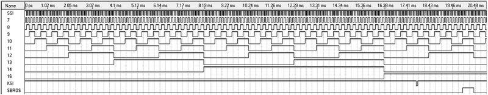

www.spetsialist-mx.ru
САЙТ О ПК "СПЕЦИАЛИСТ" И ЕГО КЛОНАХ
| |
|
| ГЛАВНАЯ | |
| МИКРОПРОЦЕССОР | |
| СИНХРОГЕНЕРАТОР | |
| ПАМЯТЬ | |
| ИНТЕРФЕЙС | |
| КЛОНЫ | |
| ПРОГРАММЫ | |
| ИГРЫ | |
| СПЕЦИАЛИСТ МХ | |
| ПЛИС | |
| ССЫЛКИ | |
| ОБРАТНАЯ СВЯЗЬ |
СИНХРОГЕНЕРАТОР
Функции синхрогенератора, счётчика регенерации ОЗУ и счётчика сканирования дисплея совмещены в одном устройстве, что позволило значительно упростить схему компьютера и обойтись без специальных БИС.
Тактовый генератор, стабилизированный кварцем ZQ1, собран на элементах DD1.1, DD1.2, DD1.6. Резонансная частота кварца 8 МГц. Импульсы с тактового генератора поступают на вход счётчика синхрогенератора (DD8, DD2...DD5), на выходах которого вырабатываются сигналы, используемые для адресации экранной области ОЗУ при регенерации изображения. Кроме того, из этих сигналов с помощью логических элементов DD6.2, DD1.5, DD6.3, DD11.3, DD7.1, DD7.3, DD6.1, DD10 выделяются синхронизирующие и гасящие импульсы. Строчный синхроимпульс с выхода микросхемы DD11.3 и кадровый синхроимпульс, снимаемый с выхода DD10, через DD19.3 смешиваются с сигналом изображения, вырабатываемым регистром сдвига DD47 и DD48. Кадровый и строчный гасящий импульсы через элементы DD9.2, DD9.1, DD13, DD1.4 запрещают запись информации в регистры сдвига. Так как на вход 1 микросхемы DD47 подан уровень 0, то с появлением гасящих импульсов после восьми сдвигов информации на выходе регистра DD48 появляется 0, что соответствует черному цвету.
Узел, состоящий из микросхем DD20.1, DD20.2, DD11.1 служит для получения тактирующих импульсов F1 и F2 амплитудой 12 В, необходимых для работы микропроцессора, и сигнала /RAS, управляющего работой ОЗУ и адресных мультиплексоров ОЗУ. Дешифратор DD14 формирует сигналы выборки /CAS трёх линеек микросхем ОЗУ - /V1, /V2, /V3.
Диаграмма работы генератора тактов представлена на рисунке.
Период строчной синхронизации - 64 мкс., длительность строчного гасящего импульса - 16 мкс., период кадровой развёртки - 20 мс., длительность кадрового гасящего импульса - 3584 мкс. Диаграмма работы счётчика элементов - точек в строке на экране дисплея и формирование строчных гасящих и синхронизирующих синхроимпульсов ССИ и СГИ представлена на рисунке.
Диаграмма работы счётчика строк в кадре дисплея, формирование кадровых гасящих и синхронизирующих импульсов КСИ и КГИ представлена на рисунке.
